A storyline puts the printed pieces of one affair in order, as the newspapers printed them. Each piece is a text that several papers printed; every printing was read and checked against its page scan.
It says what was printed, where and when, and how each paper set it: its headings, its lead-ins, the words it changed.
It does not say who copied whom, unless a paper names its source.
The paragraphs between the pieces use only what the papers printed, and each piece shows its opening beside the scan.
Storyline · 1807
‘Not to be intimidated by menace’: the Chesapeake affair
A British warship fires on an American frigate off the Virginia capes. Over six months the papers print the account, the President's answer, a British commodore's threat and a town's reply, the order behind the attack, and the verdicts of November.
11 printed pieces101 printings10 newspapers, Portland to Wheeling26 June – 10 December 1807every printing checked against its scan
● a newspaper's printing ◇ the day the piece was written or signed ▬ the days the court sat. Rows go down in the order the pieces first appeared, so they step to the right by construction; what to read is the spread within each row (how long a piece stayed in print) and the gap between a diamond and its dots (how long a piece took to reach these papers). Point at a dot for the paper and the day.The pieces as a table
On Friday 26 June the National Intelligencer in Washington printed the first account in this archive, under the heading ‘British Outrage’: on the Monday before, the British ship Leopard had followed the American frigate Chesapeake out to sea, demanded three men said to be deserters, and fired on her until she struck. By 7 July, seven more papers had printed the same account, from Alexandria to Portland, and each set it in its own way.
ReportPrinted 26 JuneWashington's National Intelligencer
The Leopard, one of the British squadron at the capes, followed the Chesapeake out to sea, demanded three men said to be deserters, and fired on her until she struck.
BRITISH OUTRAGE. We give the public the particulars of the following outrage on the American flag, under the influence of feelings, which, we are certain, are in unison with those entertained universally by our fellow-citizens; feelings which cannot, which ought not to be suppressed. We know not, indeed, that this savage outrage has a precedent in naval annals.The opening as printed in the National Intelligencer, 26 June. The transcription matches the scan.
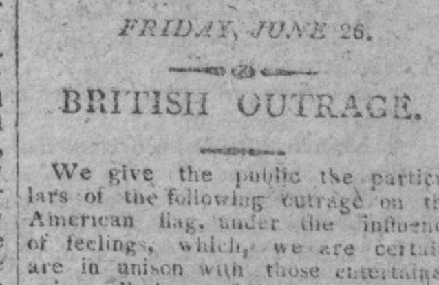
Scan · National Intelligencer, Washington, D.C., 26 June 1807, page 3 · the whole page (PDF)
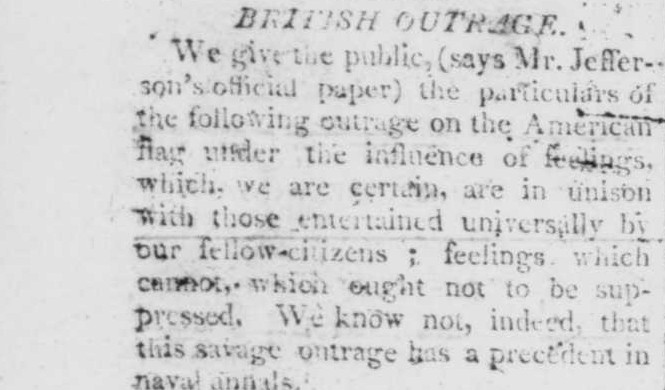
Scan · Portland Gazette, and Maine Advertiser, Portland, Me., 6 July 1807, page 2 · the Portland paper's aside · the whole page (PDF)
How the papers set it
National IntelligencerWashington, 26 June heads it ‘BRITISH OUTRAGE.’ under its dateline, ‘Friday, June 26’: the earliest printing found
Alexandria Daily AdvertiserAlexandria, 27 June ‘BRITISH OUTRAGE!’; its paragraph stops at ‘by our fellow citizens.’, without the sentences ‘feelings which cannot … naval annals’
Herald of the United StatesWarren, 4 July sets a heading of its own above the account: ‘MORE THAN A “SPECK OF WAR.”’
Portland Gazette, and Maine AdvertiserPortland, 6 July ‘We give the public, (says Mr. Jefferson's official paper) the particulars …’
New Hampshire GazettePortsmouth, 7 July prints ‘On Monday, June 22,’ where Washington had ‘On Monday last’
On 2 July the President answered with a proclamation. British armed vessels were to leave American harbours and waters, and all intercourse with them was forbidden. The National Intelligencer printed it in an extra that night; by 23 July it was in nine papers.
ProclamationDated 2 JulyPresident Jefferson
All armed vessels bearing commissions under the British government are to leave the harbours and waters of the United States, and all intercourse with them is forbidden.
By THOMAS JEFFERSON, President of the U. States of America, A PROCLAMATION. DURING the wars which, for some time, have unhappily prevailed among the powers of Europe, the United States of America, firm in their principles of peace, have endeavored by justice, by a regular discharge of all their national and social duties, and byThe opening as printed in the Alexandria Daily Advertiser, 3 July. The transcription matches the scan.
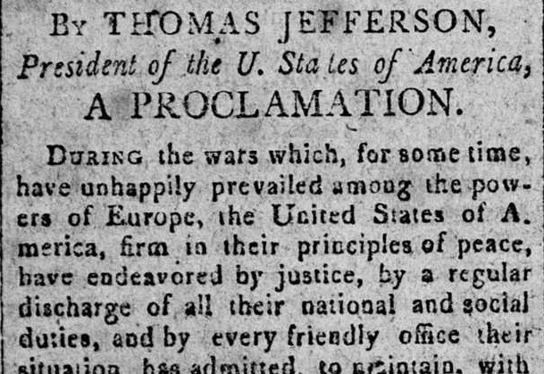
Scan · Alexandria Daily Advertiser, Alexandria, Va., 3 July 1807, page 3 · the whole page (PDF)
How the papers set it
National IntelligencerWashington, 3 July printed it first in an extra the night before, as the paper says, and again in its regular issue
Herald of the United StatesWarren, 11 July prints the dateline ‘Washington-City, July 2, 1807.’ between the heading and the text
EnquirerRichmond, 7 July heads it ‘PRESIDENT OF THE U. STAES OF AMERICA’, a printer's slip
At Norfolk a committee had resolved on 29 June to forbid any communication between the British consul and the British ships lying in Lynhaven Bay. On 3 July the British commodore, Douglas, wrote to the Mayor from his ship: unless the resolution was annulled, he would stop every vessel bound in or out of Norfolk. The Mayor answered the next day, the Fourth of July: ‘The day on which this answer is written, ought of itself to prove to the subjects of your sovereign, that the American people are not to be intimidated by menace.’ The papers printed the exchange together, with the report of the man who carried the answer on board, and the commodore's second letter.
The commodore · on board the Bellona, Hampton Roads
LetterDated 3 JulyCommodore Douglas, on board the Bellona
Unless the committee's resolution against any communication with the British consul and ships is annulled, he will stop every vessel bound in or out of Norfolk; it rests with the inhabitants ‘either to engage in a war or remain on terms of peace’.
His Majesty's Ship Bellona, Hampton Roads, July 3, 1807. SIR, I beg leave to represent to you that having observed in the Newspapers a resolution made by a committee on the 29th ult. prohibiting any communication between His Britannick Majesty's Consul at Norfolk, and his ships lying at anchor in Lynhaven Bay; and this beingThe opening as printed in the Norfolk Gazette, 6 July. The transcription matches the scan.
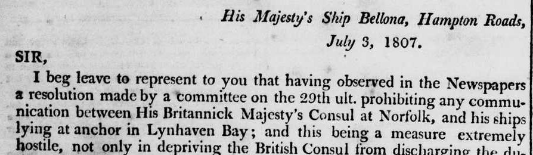
Scan · Norfolk Gazette, Norfolk, Va., 6 July 1807, page 2 · the whole page (PDF)
How the papers set it
National IntelligencerWashington, 10 July prints the letter under the Norfolk Ledger's own heading, ‘WAR INEVITABLE!!!’
Wheeling RepositoryWheeling, 30 July prints ‘his ships in Lynnhaven Bay’, without the words ‘lying at anchor’
AnswerDated 4 JulyRichard E. Lee, Mayor of Norfolk
The ban was an act of individuals, not of the government; the inhabitants will protect themselves against any aggression.
ANSWER. Norfolk, July 4, 1807. SIR, I have received your menacing letter of yesterday. The day on which this answer is written, ought of itself to prove to the subjects of your sovereign, that the American people are not to be intimidated by menace, or induced to adopt any measures, except by a sense of their perfect propriety.The opening as printed in the Norfolk Gazette, 6 July. The transcription matches the scan.
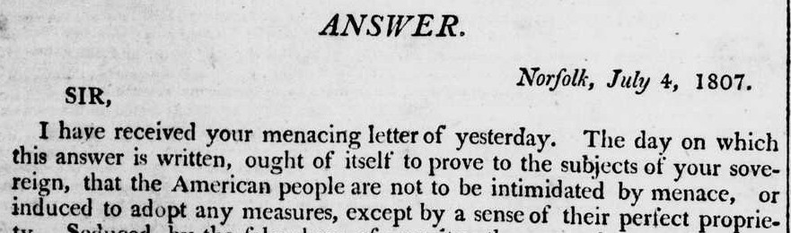
Scan · Norfolk Gazette, Norfolk, Va., 6 July 1807, page 2 · the whole page (PDF)
How the papers set it
EnquirerRichmond, 7 July ‘your menacing letter of yesterday this moment’, as the Alexandria and Martinsburg papers print it; six papers have no ‘this moment’
EnquirerRichmond, 7 July ‘the false shew of sincerity’, where the others have ‘security’
ReportDated 5 JulyLittleton W. Tazewell, who carried the answer
On board the Bellona, Douglas said his letter had been misapprehended, and that he intended no menace.
Norfolk, July 5, 1807. SIR, In pursuance of your request, I this day went down to the British squadron, lying in Hampton Roads, for the purpose of delivering the letter with which I was charged to capt. Douglas; on arriving alongside his ship, the Bellona, I was invited on board, received by capt. Douglas himselfThe opening as printed in the Norfolk Gazette, 8 July. The transcription matches the scan.
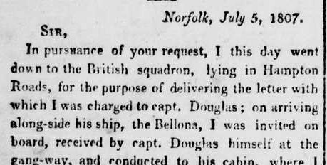
Scan · Norfolk Gazette, Norfolk, Va., 8 July 1807, page 2 · the whole page (PDF)
How the papers set it
Virginia ArgusRichmond, 11 July names its source: ‘—Ledger.’, the Norfolk Gazette and Publick Ledger
Wheeling RepositoryWheeling, 30 July prints a shorter account in the third person, ‘to give an idea of what passed at the interview’
The commodore · on board the Bellona, Hampton Roads
LetterDated 6 JulyCommodore Douglas
Every circumstance has been discussed with the gentlemen who carried the Mayor's answer; he will use every exertion, consistent with the honour of the British flag, toward an amicable end.
His Majesty's ship Bellona, Hampton Roads, 6th July, 1807. Sir, I have the honor to acknowledge the receipt of your letter of the 4th instant, in answer to mine of the preceding day, requesting that the British consul might be restored to his powers. As every circumstance relative to the above communication was so fullyThe opening as printed in the Alexandria Daily Advertiser, 13 July. The transcription matches the scan.
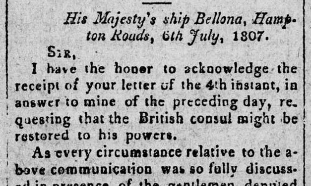
Scan · Alexandria Daily Advertiser, Alexandria, Va., 13 July 1807, page 3 · the whole page (PDF)
How the papers set it
Portland Gazette, and Maine AdvertiserPortland, 20 July sets its own heading: ‘COM. DOUGLAS'S SECOND LETTER.’
Herald of the United StatesWarren, 18 July puts it under ‘By this Morning's Mail.’
The British admiral at Halifax, Berkeley, had signed the order on 1 June: if his captains met the Chesapeake at sea, they were to search her for deserters. The Alexandria Daily Advertiser printed it on 28 July, eight weeks after it was signed and more than a month after the attack.
OrderDated 1 JuneVice-Admiral George Cranfield Berkeley, at Halifax
If his captains meet the Chesapeake at sea, they are to show her captain this order and search her for the deserters named in its margin.
By the honorable George Granfield Berkeley. Vice admiral of the white, and commander in chief of his majesty's ships and vessels employed in the river St. Lawrence along the coast of Nova Scotia, the islands of St. John and cape Breton, the bay of Fundy, and at and about the island of Bermuda, or Somers' Islands.The opening as printed in the Alexandria Daily Advertiser, 28 July. The transcription matches the scan.
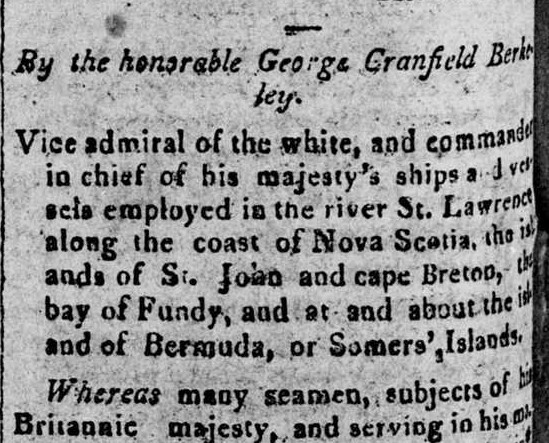
Scan · Alexandria Daily Advertiser, Alexandria, Va., 28 July 1807, page 2 · the whole page (PDF)
How the papers set it
Alexandria Daily AdvertiserAlexandria, 28 July prints the admiral's middle name ‘Granfield’, as far as the scan shows; the others ‘Cranfield’
Herald of the United StatesWarren, 1 August heads it ‘IMPORTANT ORDER;’ and spells the admiral ‘BERKLEY’
Norfolk GazetteNorfolk, 30 September prints it again, in a new setting, after a question whether the court of inquiry would make the order part of its report
On 30 July the President called Congress to meet early, on 26 October, because ‘great and weighty matters’ claimed its consideration. His message to the special session opened: ‘Circumstances, fellow-citizens, which seriously threatened the peace of our country have made it a duty to convene you at an earlier period than usual.’
ProclamationDated 30 JulyPresident Jefferson
‘Great and weighty matters’ require Congress to meet at Washington on Monday 26 October.
A PROCLAMATION. WHEREAS great and weighty matters claiming the consideration of the Congress of the United States form an extraordinary occasion for convening them, I do by these presents appoint Monday the 26th day of October next, for their meeting at the city of Washington; hereby requiring the respective senators and representatives then and thereThe opening as printed in the Alexandria Daily Advertiser, 1 August. The transcription matches the scan.
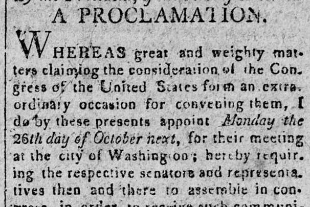
Scan · Alexandria Daily Advertiser, Alexandria, Va., 1 August 1807, page 3 · the whole page (PDF)
How the papers set it
National IntelligencerWashington, 31 July keeps it in its columns seven times, as a standing notice
National IntelligencerWashington, 5 August in one of those, signed by the printer's error ‘JAMES MADSISON’
Herald of the United StatesWarren, 8 August prints ‘from an extraordinary occasion’ (for ‘form’) and leaves out ‘then and there to assemble in Congress’
Message to CongressDated 27 OctoberPresident Jefferson
The message turns to the British answer on the treaty, the attack on the Chesapeake and the proclamation that followed, the defence of the ports, and the Burr trials.
TO THE SENATE AND HOUSE OF REPRESENTATIVES of the UNITED STATES. Circumstances, fellow-citizens, which seriously threatened the peace of our country have made it a duty to convene you at an earlier period than usual. The love of peace so much cherished in the bosom of our citizens, which has so long guided the proceedingsThe opening as printed in the National Intelligencer, 27 October. The transcription matches the scan.
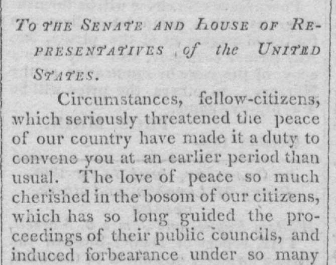
Scan · National Intelligencer, Washington, D.C., 27 October 1807, page 3 · the whole page (PDF)
How the papers set it
EnquirerRichmond, 30 October prints it in an Enquirer Extra of 30 October
New Hampshire GazettePortsmouth, 3 November prints ‘which had so long guided’ and ‘the proceedings of their councils’, without ‘public’, as the Portland Gazette does
In November two verdicts were printed. A naval court of inquiry, held on board the Chesapeake at Norfolk, found among other things that she had been prematurely surrendered. A committee of the House reported that the outrage ‘has been stamped with circumstances of indignity and insult’ with scarcely a parallel.
Opinion of a courtDated 4 NovemberA naval court of inquiry, on board the Chesapeake
On the conduct of Commodore James Barron: among other findings, that the Chesapeake was prematurely surrendered when she was nearly prepared for battle.
At a Court of Enquiry assembled on board the United States Ship Chesapeake, in the harbor of Norfolk and State of Virginia, by order of the Honble. Robert Smith, Secretary of the Navy of the United States, and continued by adjournment from day to day from Monday the 5th day of October, 1807, until Wednesday the 4th day of November, 1807.The opening as printed in the National Intelligencer, 16 November. The transcription matches the scan.
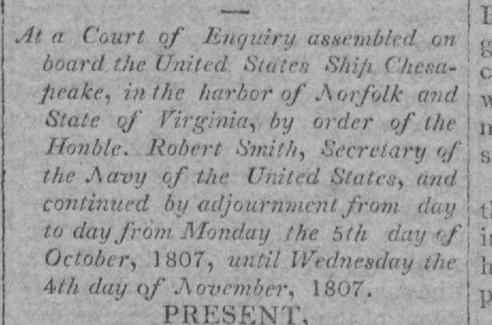
Scan · National Intelligencer, Washington, D.C., 16 November 1807, page 2 · the whole page (PDF)
How the papers set it
Wheeling RepositoryWheeling, 3 December prints ‘Court of Inquiry’, where the others have ‘Enquiry’
New Hampshire GazettePortsmouth, 8 December quotes the court's 25th finding inside an editorial credited to the Democratic Press
Report to the HouseReported 17 NovemberMr. Blount, for a committee of the House
The outrage on the Chesapeake ‘has been stamped with circumstances of indignity and insult’ with scarcely a parallel.
Mr. Blount from the committee to whom was referred so much of the message of the President as relates to aggressions, &c. made a report. The report commences with an expression of sensibility at the outrage committed on the Chesapeake, states the receipt of information relative thereto from the state & navy departments,The opening as printed in the National Intelligencer, 18 November. The transcription matches the scan.
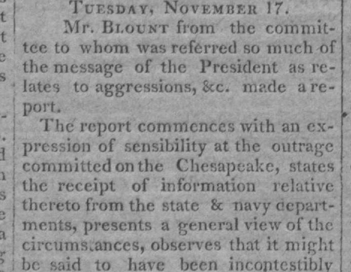
Scan · National Intelligencer, Washington, D.C., 18 November 1807, page 2 · the whole page (PDF)
How the papers set it
National IntelligencerWashington, 18 November prints ‘the state & navy departments’ with an ampersand, where the others have ‘and’
New Hampshire GazettePortsmouth, 1 December puts it under ‘From WASHINGTON, Nov. 17.’
Printed by 8 newspapers, 18 November – 10 December
The act of 22 December 1807 laid an embargo on all ships and vessels in the ports and harbours of the United States; its printings open the reviewed stories of 1808. Across the whole archive, stories that mention an embargo rise in five waves: 1794, 1796, 1798, 1801 and 1808–1810. Two are American embargoes; the three between are European.
Over 1776 the papers printed what each side said: the King's speeches to Parliament, the Commons on a bill to stop American trade, Congress's resolutions and its Declaration, the offers of pardon of the King's commissioners, and the report of a meeting on Staten Island.
11 printed pieces94 printings16 newspapers, Portsmouth to Williamsburg8 January – 22 October 1776every printing checked against its scan
● a newspaper's printing ◇ the day the piece was written or signed. Rows go down in the order the pieces first appeared, so they step to the right by construction; what to read is the spread within each row (how long a piece stayed in print) and the gap between a diamond and its dots (how long a piece took to reach these papers). Point at a dot for the paper and the day.The pieces as a table
In January the papers printed the speech with which the King had opened Parliament in October. Those who had ‘long too successfully laboured to inflame my people in America’, he said, now ‘openly avow their revolt, hostility and rebellion’. The New-York Gazette printed it first in this archive, on 8 January; eight more papers followed by 20 January.
SpeechSpoken 26 October 1775King George III, opening Parliament
Those who have ‘long too successfully laboured to inflame my people in America’, the King tells Parliament, now ‘openly avow their revolt, hostility and rebellion’.
My Lords, and Gentlemen, "THE present situation of America, and my constant desire to have your advice, concurrence, and assistance on every important occasion, have determined me to call you thus early together. "Those who have long too successfully laboured to inflame my people in America by gross misrepresentations, and to infuse into their mindsThe opening as printed in the New-York Gazette, 8 January. The transcription matches the scan.
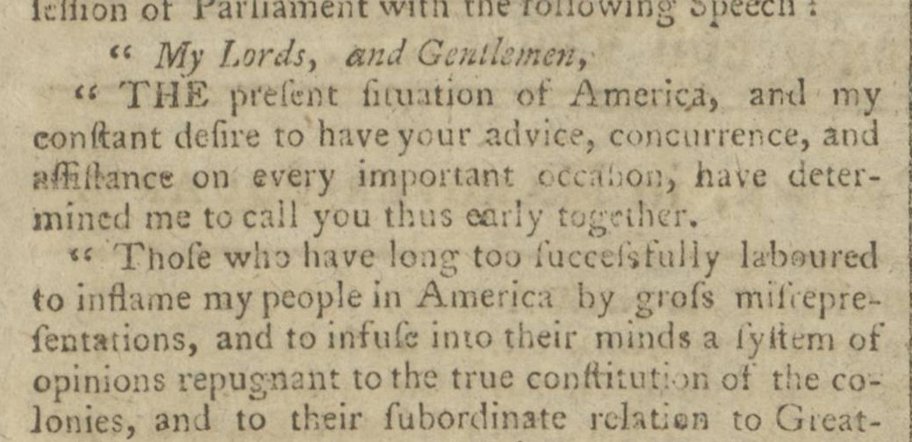
Scan · New-York Gazette, New York, N.Y., 8 January 1776, page 2 · the whole page (PDF)
How the papers set it
New-Hampshire Gazette and Historical ChroniclePortsmouth, 9 January heads it as the speech to Parliament ‘on October 26, 1775’
Virginia Gazette · sn84024742Williamsburg, 19 January prints ‘America, an my constant desire’: the printer's slip, not the machine's
Printed by 9 newspapers, 8–20 January
New-York Gazette 8 Jan
New-Hampshire Gazette and Historical Chronicle 9 Jan
In February the papers printed London reports of December. The Commons had gone into committee ‘on the bill for prohibiting all trade and intercourse with the Colonies in rebellion’; days later in print, the clause ‘which occasioned the greatest debate’ was settled, and ships of the colonies could be taken ‘from and after the first of January 1776’.
ReportReported 6 December 1775A London report of the House of Commons
The Commons go into committee ‘on the bill for prohibiting all trade and intercourse with the Colonies in rebellion’. The clause that gives American ships time is printed with blanks for its dates, so ‘that the friends of America may have an opportunity’ to have them filled.
When the order of the day was read yesterday in the House of Commons, for going into a committee of the whole House on the bill for prohibiting all trade and intercourse with the Colonies in rebellion, &c. a member (Mr. Dempster we believe) moved, that it be an instruction given by the House beforeThe opening as printed in the Pennsylvania Journal, 21 February. The transcription matches the scan.
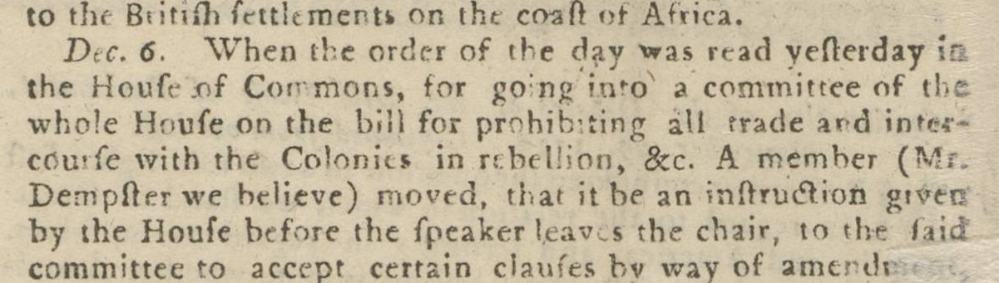
Scan · Pennsylvania Journal, Philadelphia, Pa., 21 February 1776, page 2 · the whole page (PDF)
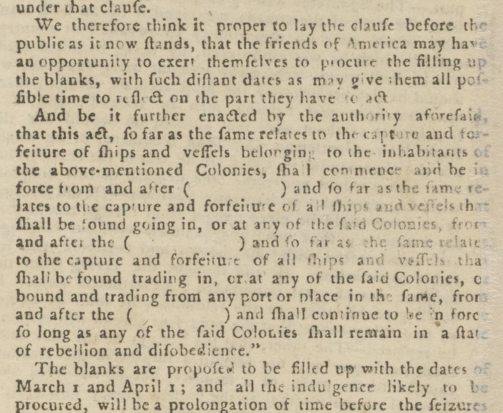
Scan · Pennsylvania Journal, Philadelphia, Pa., 21 February 1776, page 2 · the clause, with blanks for its dates · the whole page (PDF)
How the papers set it
New York PacketNew York, 29 February prints ‘A member (Mr. Dempster) moved’, without ‘we believe’
Virginia Gazette · sn84024739Williamsburg, 9 March writes the date out, ‘December 6.’
ReportReported 8 December 1775A London report of the House of Commons
The clause ‘which occasioned the greatest debate’ is settled: ships belonging to the inhabitants of the colonies may be taken ‘from and after the first of January 1776’.
The clause in the American restraining bill, which occasioned the greatest debate at its second reading, was at length settled as follows: “And be it farther enacted, by the authority aforesaid, that this act, so far as relates to the capture and forfeiture of ships and vessels belonging to the inhabitants of the above-mentioned Colonies, shall commence and be in force from and after the first of January 1776;The opening as printed in the Pennsylvania Evening Post, 27 February. The transcription matches the scan.
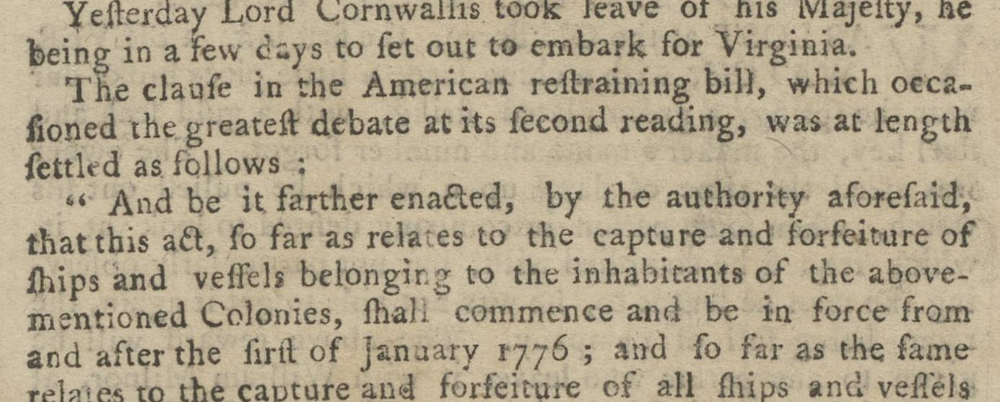
Scan · Pennsylvania Evening Post, Philadelphia, Pa., 27 February 1776, page 3 · the whole page (PDF)
How the papers set it
Pennsylvania Evening PostPhiladelphia, 27 February prints ‘And be it farther enacted’
Pennsylvania GazettePhiladelphia, 28 February prints ‘And be it further enacted by the authority’
On 6 April Congress opened the ports to ‘the people of all such countries as are not subject to the King of Great-Britain’; by 25 April the resolutions were in nine papers. On 15 May it recommended that the colonies adopt governments under the authority of the people, since the King ‘has, by a late act of Parliament, excluded the inhabitants of these United Colonies from the protection of his Crown’.
ResolutionDated 6 AprilCongress
Goods may be exported by the inhabitants of the colonies and by ‘the people of all such countries as are not subject to the King of Great-Britain’.
IN CONGRESS, April 6, 1776. Resolved, That any goods, wares and merchandizes, except staves and empty casks, other than shaken or knock'd down casks for molasses, may be exported from the Thirteen United Colonies, by the inhabitants thereof, and by the people of all such countries as are not subject to the King of Great-Britain,The opening as printed in the Pennsylvania Journal, 10 April. The transcription matches the scan.
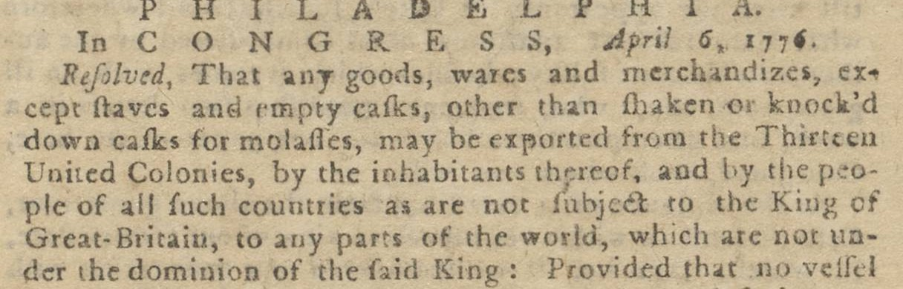
Scan · Pennsylvania Journal, Philadelphia, Pa., 10 April 1776, page 2 · the whole page (PDF)
How the papers set it
Dunlap's Pennsylvania PacketPhiladelphia, 8 April heads it ‘IN CONGRESS, March 6, 1776.’, where most printings have April 6
New York PacketNew York, 11 April heads it ‘In CONGRESS, March 6.’, with no year
Since the King ‘has, by a late act of Parliament, excluded the inhabitants of these United Colonies from the protection of his Crown’, Congress recommends that the colonies adopt governments under the authority of the people.
WHEREAS his Britannic Majesty, in conjunction with the Lords and Commons of Great-Britain, has, by a late act of Parliament, excluded the inhabitants of these United Colonies from the protection of his Crown: And whereas no answer whatever to the humble petitions of the Colonies for redress of grievances, and reconciliation with Great-Britain has been or is likely to be given;The opening as printed in the Dunlap's Pennsylvania Packet, 20 May. The transcription matches the scan.
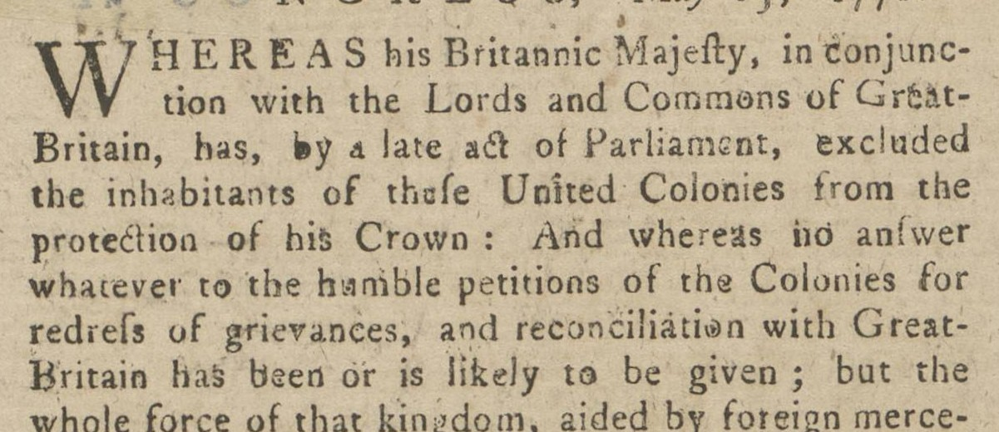
Scan · Dunlap's Pennsylvania Packet, Philadelphia, Pa., 20 May 1776, page 2 · the whole page (PDF)
How the papers set it
New York PacketNew York, 6 June prints ‘And whereas no protection whatever, to the humble petition of the colonies’, where the others have ‘no answer’
Pennsylvania LedgerPhiladelphia, 18 May spells it ‘his Brittannic Majesty’
On Saturday 6 July the Pennsylvania Evening Post printed the Declaration that Congress had adopted on 4 July: ‘WHEN, in the course of human events, it becomes necessary for one people to dissolve the political bands which have connected them with another’, it begins. By 26 July it was in 14 papers, and the farther a paper's town from Philadelphia, the later it printed it.
DeclarationDated 4 JulyCongress
Congress sets out the causes for which it is necessary ‘for one people to dissolve the political bands which have connected them with another’.
In CONGRESS, July 4, 1776. A Declaration by the Representatives of the United States of America, in General Congress assembled. WHEN, in the course of human events, it becomes necessary for one people to dissolve the political bands which have connected them with another, and to assume, among the powersThe opening as printed in the Pennsylvania Evening Post, 6 July. The transcription matches the scan.
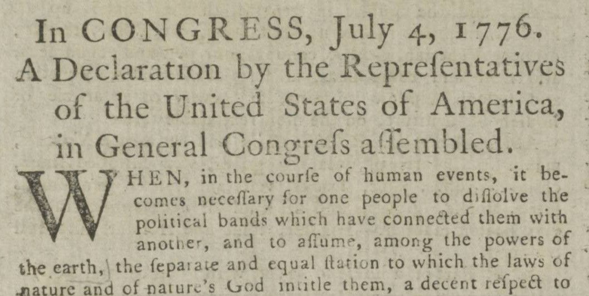
Scan · Pennsylvania Evening Post, Philadelphia, Pa., 6 July 1776, page 1 · the whole page (PDF)
How the papers set it
Pennsylvania GazettePhiladelphia, 10 July sets ‘A DECLARATION’ alone on a line in large spaced capitals
American GazetteSalem, 16 July prints ‘UUITED’ in its heading
Virginia Gazette · sn84024742Williamsburg, 19 July prints a summary first, with the full text ‘at full length in next week's Gazette’
Printed by 14 newspapers, 6–26 July
Pennsylvania Evening Post 6 Jul
Dunlap's Pennsylvania Packet 8 Jul
Pennsylvania Gazette 10 Jul
Pennsylvania Journal 10 Jul
New York Packet 11 Jul
Pennsylvania Ledger 13 Jul
Connecticut Courant and Hartford Weekly Intelligencer 15 Jul
In July the papers printed the speech with which the King had closed Parliament on 23 May. On 19 July Congress ordered Lord Howe's declaration of pardons published, ‘that the good people of these United States may be informed of what nature are the Commissioners, and what the terms’; the Pennsylvania Evening Post printed it on 20 July.
SpeechSpoken 23 MayKing George III, closing Parliament
Closing the session, the King says that ‘the conclusion of public business, and the advanced season of the year’ make it proper to give the Houses ‘some recess’.
My Lords, and Gentlemen, THE conclusion of public business, and the advanced season of the year, make in proper for me to give you some recess, but I cannot put an end to this session, without assuring that the fresh instances of your attachment to me, and your steady adherenceThe opening as printed in the New York Packet, 18 July. The transcription matches the scan.
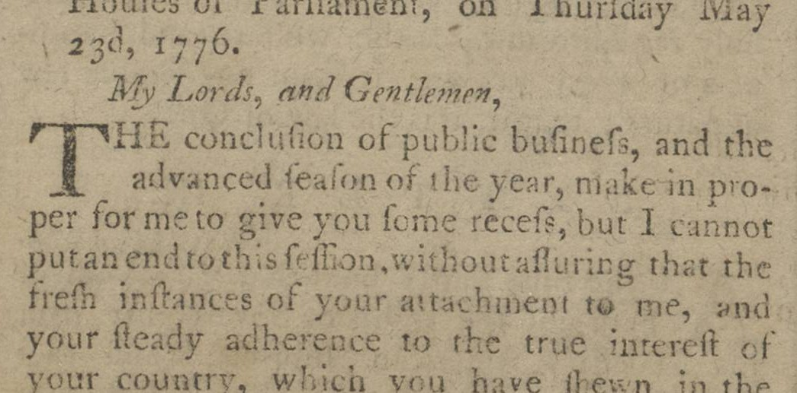
Scan · New York Packet, New York, N.Y., 18 July 1776, page 4 · the whole page (PDF)
How the papers set it
New York PacketNew York, 18 July prints ‘make in pro-per’, the printer's slip for ‘make it proper’
Pennsylvania LedgerPhiladelphia, 10 August heads it ‘On Thursday, May 23, 1776’
Resolution and declarationOrdered 19 JulyCongress, publishing Lord Howe's letter of 20 June
Congress orders Lord Howe's letter to the late royal governors, and the declaration of pardons it enclosed, to be published, ‘that the good people of these United States may be informed of what nature are the Commissioners, and what the terms’.
In CONGRESS, July 19, 1776. R ESOLVED, That a copy of the circular letters and of the declarations they enclosed from Lord Howe to Mr. W. Franklin, Mr. Penn, Mr. Eden, Lord Dunmore, Mr. Martin and Sir James Wright, late Governors, sent to Amboy by a flag and forwarded to Congress, by General Washington, beThe opening as printed in the Pennsylvania Evening Post, 20 July. The transcription matches the scan.
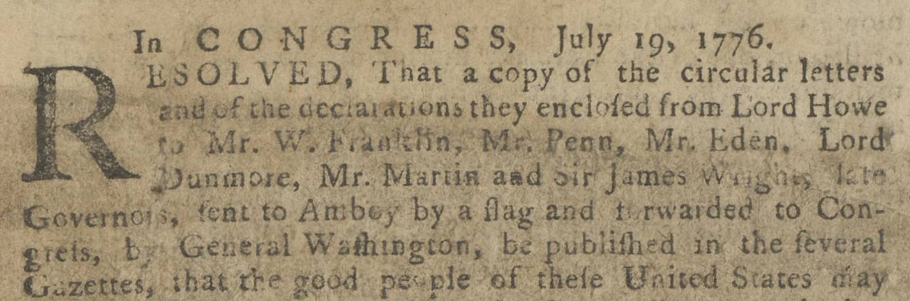
Scan · Pennsylvania Evening Post, Philadelphia, Pa., 20 July 1776, page 1 · the whole page (PDF)
In September the papers reported that Franklin, Adams and Rutledge had ‘set off for New-York, in order, it is said, to confer with Lord Howe’. Congress then published its committee's report: ‘It was on Wednesday last, upon Staten-island, opposite to Amboy, where his Lordship received and entertained us with the utmost politeness’. From 30 September the papers printed the commissioners' declaration of 19 September: Congress, it said, had ‘disavowed every purpose of reconciliation’.
ReportPrinted 10 SeptemberA Philadelphia report
Benjamin Franklin, John Adams and Edward Rutledge ‘set off for New-York, in order, it is said, to confer with Lord Howe’.
Philadelphia, September 8, 1776. Yesterday the Hon. Benjamin Franklin, John Adams, and Edward Rutledge, Esquires, Members of the Honorable Congress, set off for New-York, in order, it is said, to confer with Lord Howe, upon the subject of sundry propositions sent by his Lordship to the Congress by General Sullivan.The opening as printed in the Dunlap's Pennsylvania Packet, 10 September. The transcription matches the scan.
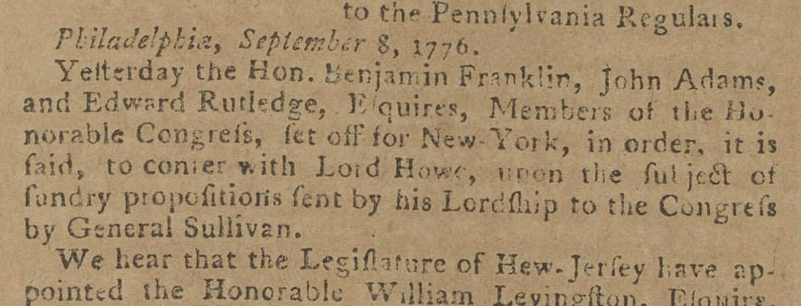
Scan · Dunlap's Pennsylvania Packet, Philadelphia, Pa., 10 September 1776, page 3 · the whole page (PDF)
How the papers set it
Dunlap's Pennsylvania PacketPhiladelphia, 10 September dates it ‘Philadelphia, September 8, 1776.’ and begins ‘Yesterday’
Pennsylvania GazettePhiladelphia, 11 September begins ‘Monday last’
Pennsylvania Evening PostPhiladelphia, 14 September begins ‘Last Monday’
ReportPrinted 17 SeptemberCongress's committee: Franklin, Adams and Rutledge
The committee reports its meeting with Lord Howe: ‘It was on Wednesday last, upon Staten-island, opposite to Amboy, where his Lordship received and entertained us with the utmost politeness’.
The Committee, who were appointed to wait on Lord Howe, having returned to Congress, made their report in the following words: “ In obedience to the order of Congress, we have had a meeting with Lord Howe. It was on Wednesday last, upon Staten-island, opposite to Amboy, where his Lordship received and entertained us with the utmost politeness.The opening as printed in the Pennsylvania Evening Post, 17 September. The transcription matches the scan.
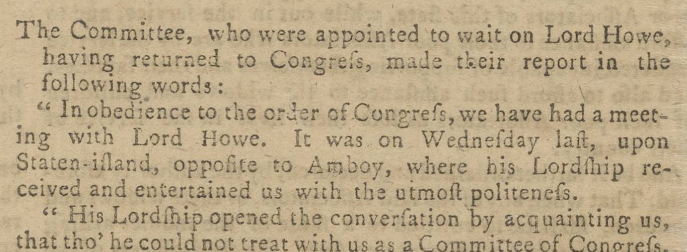
Scan · Pennsylvania Evening Post, Philadelphia, Pa., 17 September 1776, page 2 · the whole page (PDF)
How the papers set it
Pennsylvania LedgerPhiladelphia, 21 September signs the item above it ‘CHARLES THOMPSON, Secretary.’
Dunlap's Pennsylvania PacketPhiladelphia, 24 September breaks the column after ‘It was on Wednesday last’
DeclarationDated 19 SeptemberLord Howe and General Howe, the King's commissioners
Congress, the commissioners declare, has ‘disavowed every purpose of reconciliation’; the inhabitants are invited to consider whether to trust their fate to Congress.
The following Declaration of Lord and General Howe was printed in a Hand Bill at New York. By RICHARD Viscount HOWE of the Kingdom of Ireland, and WILLIAM HOWE, Esq; General of his Majesty's forces in America, the King's Commissioners for restoring peace to his Majesty's Colonies and Plantations in North-America, &c. &c. &c. DECLARATION. ALTHOUGH the Congress, whom the misguided Americans suffer to direct their opposition to a re-establishment of the constitutional government of these provinces, have disavowed every purpose of reconciliation, not consonantThe opening as printed in the Pennsylvania Gazette, 2 October. The transcription matches the scan.
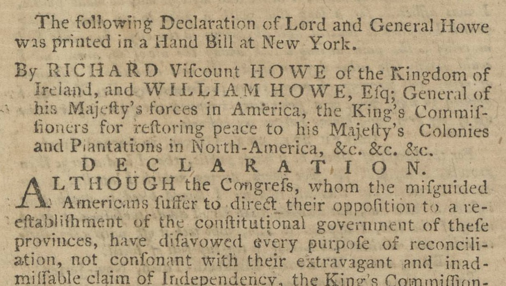
Scan · Pennsylvania Gazette, Philadelphia, Pa., 2 October 1776, page 3 · the whole page (PDF)
How the papers set it
Pennsylvania GazettePhiladelphia, 2 October introduces it as ‘printed in a Hand Bill at New York’
Pennsylvania LedgerPhiladelphia, 5 October says it ‘was circulated about the City on Tuesday last in hand bills’
Virginia Gazette · sn84024739Williamsburg, 11 October heads it ‘D E C L A R A R I O N.’
Printed by 6 newspapers, 30 September – 22 October
In most of the years that followed, the papers printed accounts of the anniversary of independence in July or soon after. The telescope's Orbit view shows those stories keeping to their month, year after year.
‘That an embargo be and hereby is laid’: the embargo in 1808
On 22 December 1807 Congress laid an embargo on the ships and vessels in the ports and harbours of the United States. Over 1808 the papers print the law and the acts that tightened it, letters and reports on how it worked, the President's answers to a legislature and a town, and a committee's report to the House in November.
12 printed pieces81 printings10 newspapers, Portland to Wheeling1 January – 9 December 1808every printing checked against its scan
● a newspaper's printing ◇ the day the piece was written or signed. Rows go down in the order the pieces first appeared, so they step to the right by construction; what to read is the spread within each row (how long a piece stayed in print) and the gap between a diamond and its dots (how long a piece took to reach these papers). Point at a dot for the paper and the day.The pieces as a table
The act of 22 December 1807 laid an embargo ‘on all ships and vessels in the ports and harbors of the United States’. Its first printings, in the last days of 1807, belong to the year before; in this year's papers it runs from 1 January to 15 January, in five of them. On 9 January a supplementary act followed: while the embargo lasted, vessels licensed for the coasting trade, and fishing and whaling vessels, could not depart without bond that they would not go to a foreign port. By 9 February it was in six papers.
Act of CongressSigned 22 December 1807Congress
An embargo is laid ‘on all ships and vessels in the ports and harbors of the United States’: no clearance for a foreign port, and bonds for coasting vessels.
AN ACT Laying an Embargo on all Ships and Vessels in the ports and harbors of the United States. BE IT ENACTED by the Senate and House of Representatives of the United States of America, in Congress assembled, That an embargo be and hereby is laid on all ships and vessels in the ports andThe opening as printed in the Berkeley and Jefferson, 1 January. The transcription matches the scan.
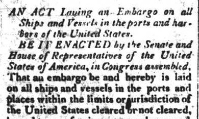
Scan · Berkeley and Jefferson, Martinsburg, W. Va., 1 January 1808, page 2 · the whole page (PDF)
How the papers set it
Portland Gazette, and Maine AdvertiserPortland, 4 January prints ‘WASHINGTON, DEC. 22.’ directly above the title
New Hampshire GazettePortsmouth, 5 January sets a large heading, ‘EMBARGO.’, above the title
Wheeling RepositoryWheeling, 7 January prints ‘That an embargo be, and hereby is, laid’, with commas, and ‘harbours’
While the embargo lasts, vessels licensed for the coasting trade, and fishing and whaling vessels, may not depart without bond that they will not go to a foreign port; there are penalties for evading it.
AN ACT Supplementary to the act, entitled "An act laying an embargo on all ships and vessels in the ports and harbors of the United States." BE it enacted by the Senate and House of Representatives of the United States of America, in Congress assembled, That during the continuance of the act to which thisThe opening as printed in the National Intelligencer, 11 January. The transcription matches the scan.
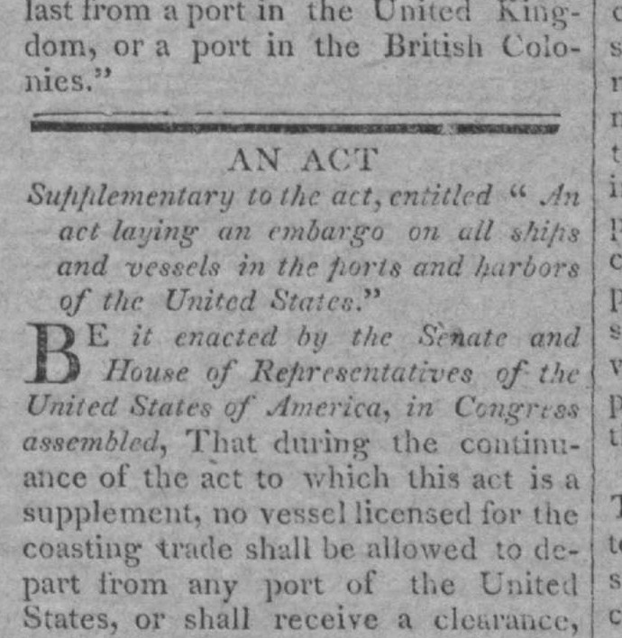
Scan · National Intelligencer, Washington, D.C., 11 January 1808, page 3 · the whole page (PDF)
How the papers set it
Norfolk GazetteNorfolk, 15 January prints it after a circular signed ‘ALBERT GALLATIN’ to the ‘Collector of Baltimore’
Virginia ArgusRichmond, 22 January sets ‘By authority.’ above it, and prints ‘Supplementary to an act’ where the others have ‘the act’
Portland Gazette, and Maine AdvertiserPortland, 1 February heads it ‘Law of the United States.’
In the spring Congress passed three more acts. On 12 March: no boat neither registered nor licensed, and no foreign vessel, could depart, and goods could not be exported by land or by water. On 22 April: during its recess the President might ‘suspend the operation of the act laying an embargo’ if peace, a suspension of hostilities or a change in the belligerents' measures made American commerce sufficiently safe. On 25 April: collectors could detain vessels, and unusual deposits of goods, suspected of evading it.
Act of CongressSigned 12 MarchCongress
No boat that is neither registered nor licensed, and no foreign vessel, may depart, and goods may not be exported from the United States by land or by water.
An ACT in addition to the act, entitled "An act supplementary to the act entitled 'An act laying an embargo on all ships and vessels in the ports and harbors of the United States.'" Be it enacted by the Senate and House of Representatives of the United States of America, in Congress assembled, That duringThe opening as printed in the National Intelligencer, 18 March. The transcription matches the scan.
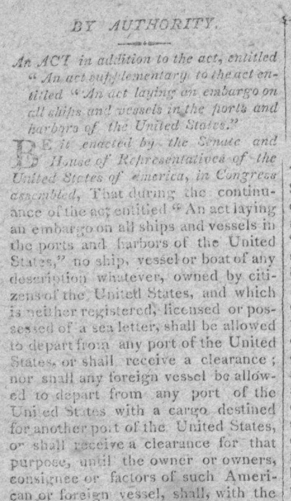
Scan · National Intelligencer, Washington, D.C., 18 March 1808, page 4 · the whole page (PDF)
How the papers set it
National IntelligencerWashington, 18 March heads it ‘BY AUTHORITY.’
Norfolk GazetteNorfolk, 18 March prints it after a note that it ‘only awaits the signature of the President to become a law.’
Portland Gazette, and Maine AdvertiserPortland, 28 March heads it ‘EMBARGO LAW—No. 3.’
During the recess of Congress the President may ‘suspend the operation of the act laying an embargo’, in whole or in part, if peace, a suspension of hostilities or changes in the belligerents' measures make American commerce sufficiently safe.
AN ACT to authorise the president of the United States, under certain conditions, to suspend the operation of the act laying an embargo on all ships and vessels in the ports and harbors of the U. S. and the several acts supplementary thereto. Be it enacted by the senate and house of representatives of theThe opening as printed in the Alexandria Daily Advertiser, 22 April. The transcription matches the scan.
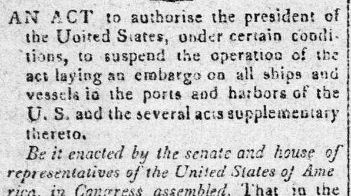
Scan · Alexandria Daily Advertiser, Alexandria, Va., 22 April 1808, page 3 · the whole page (PDF)
How the papers set it
National IntelligencerWashington, 27 April prints ‘all ships & vessels in the ports & harbors of the U. States’, with ampersands
Wheeling RepositoryWheeling, 5 May prints the bill inside the House's proceedings, after the Senate's message, with the misprint ‘hostilites’
Virginia ArgusRichmond, 20 May prints ‘and several acts supplementary thereto’, without ‘the’
Vessels whose trade is confined to bays, sounds, rivers and lakes must give bond, and collectors may detain vessels, and unusual deposits of goods, suspected of evading the embargo.
AN ACT In addition to the act, entitled "An act laying an embargo on all ships and vessels in the ports and harbors of the United States," and the several acts supplementary thereto, and for other purposes. BE it enacted by the Senate and House of Representatives of the United States of America in CongressThe opening as printed in the National Intelligencer, 2 May. The transcription matches the scan.
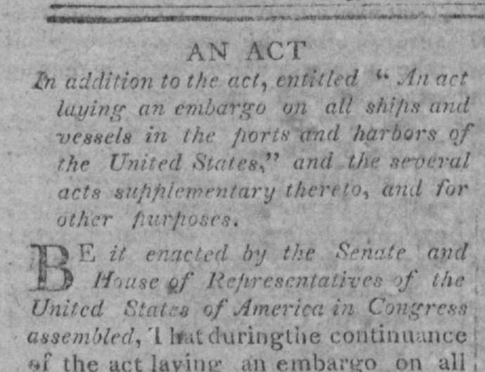
Scan · National Intelligencer, Washington, D.C., 2 May 1808, page 1 · the whole page (PDF)
How the papers set it
Alexandria Daily AdvertiserAlexandria, 10 May prints extracts under its own heading, ‘IMPORTANT INFORMATION To Captains of Coasting Vessels.’
New Hampshire GazettePortsmouth, 21 June sets ‘[PUBLISHED BY AUTHORITY.]’ above it
In April the papers printed an extract of a letter from a gentleman in Georgia, dated 14 March: the embargo ‘has had its effect on the citizens of Mobile and Pensacola’. By 5 May it was in eight papers. On 6 May the President wrote to the governors of Orleans, Georgia, South Carolina, Massachusetts and New Hampshire: since the act of 25 April, vessels bound coastwise with suspect cargoes could be detained, and as shipments of flour had become suspect in general, the governors might certify merchants they trusted to bring in what their states needed.
Letter, an extractDated 14 MarchAn unnamed gentleman in Georgia
‘The embargo has had its effect on the citizens of Mobile and Pensacola. They are almost in a state of starvation.’ The letter gives the prices there: corn at ‘four dollars per bushel’.
Extract a letter from a gentleman in Georgia, dated March 14, 1808. "The embargo has had its effect on the citizens of Mobile and Pensacola. They are almost in a state of starvation. Corn is four dollars per bushel—bacon 50 cents per pound—hogs lard one dollar per quart—fowls 9 dollars per dozen. What they will do by summer if the embargo continues, I cannot say.The opening as printed in the National Intelligencer, 20 April. The transcription matches the scan.
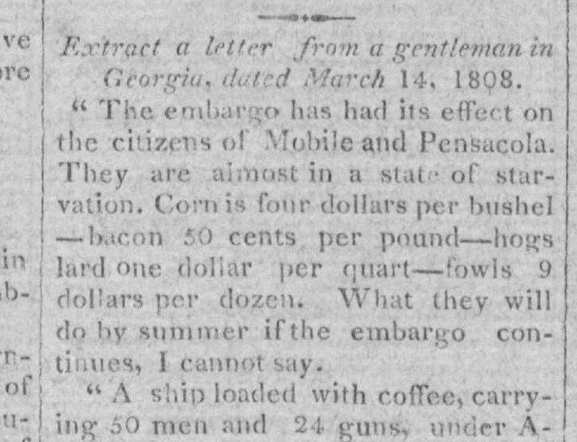
Scan · National Intelligencer, Washington, D.C., 20 April 1808, page 3 · the whole page (PDF)
How the papers set it
National IntelligencerWashington, 20 April heads it ‘Extract a letter from a gentleman in Georgia’, without ‘of’: a printer's slip
Virginia ArgusRichmond, 26 April prints ‘The emborgo has had its effect’ in its first line
Portland Gazette, and Maine AdvertiserPortland, 2 May shortens the prices, ‘Corn is 4 dollars a bushel’, and leaves out the sentence ‘What they will do by summer, if the embargo continues, I cannot say.’
LetterDated 6 MayPresident Jefferson, to five governors
Since the act of 25 April, vessels bound coastwise with suspect cargoes may be detained; as shipments of flour have become suspect in general, the governors may certify merchants they trust to bring in flour for the needs of their states.
To the Governors of Orleans, Georgia, South Carolina, Massachusetts and New-Hampshire. Washington, May 6, 1808. The evasions of the preceding embargo laws went so far towards defeating their objects, and chiefly by vessels clearing out coastwise, that Congress, by their act of April 25th, authorized the absolute detention of all vessels bound coastwise, with the cargoes exciting suspicions of an intention to evade those laws.The opening as printed in the National Intelligencer, 20 May. The transcription matches the scan.
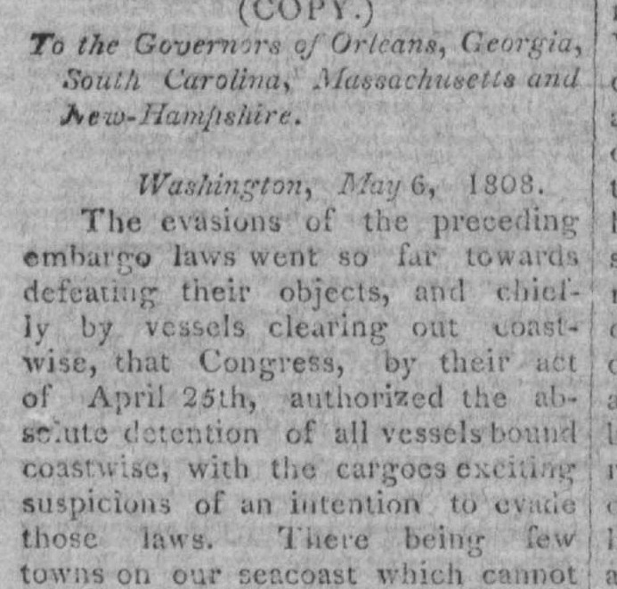
Scan · National Intelligencer, Washington, D.C., 20 May 1808, page 3 · the whole page (PDF)
How the papers set it
EnquirerRichmond, 14 May gives it first, in a paragraph of its own: ‘We understand that the President of the U. S. in his letter of May 6’ …
New Hampshire GazettePortsmouth, 24 May prints it as to one governor: ‘SIR,—The evasions …’
Virginia ArgusRichmond, 24 May prints the misspelling ‘cheifly’
Berkeley and JeffersonMartinsburg, 3 June dates the letter ‘WASHINGTON, 9th May, 1808.’
The President's proclamation of 19 April, in the papers from 13 May, said that persons on Lake Champlain and the country around it were combining ‘for the purposes of forming insurrections against the authority of the laws of the United States’, and commanded them to disperse. In August the papers printed a report from Burlington, Vermont, headed ‘Melancholy Event’: a revenue cutter's party, sent after a boat ‘well known to have been some time employed in smuggling’, had been fired on from the bank, and two of its men and a man of the town were dead. A jury of inquest, the report said, had found ‘wilful murder’; it asked that ‘all opinion’ be suspended until the facts were known.
ProclamationDated 19 AprilPresident Jefferson
‘Information has been received that sundry persons are combined or combining and confederating together on Lake Champlain and the country thereto adjacent for the purposes of forming insurrections against the authority of the laws of the United States’; such combinations are too powerful for the ordinary course of justice, and those in them are commanded to disperse.
BY THE PRESIDENT OF THE UNITED STATES. A PROCLAMATION. WHEREAS information has been received that sundry persons are combined or combining and confederating together on Lake Champlain and the country thereto adjacent for the purposes of forming insurrections against the authority of the laws of the United States, for opposing the same and obstructing their execution;The opening as printed in the National Intelligencer, 13 May. The transcription matches the scan.
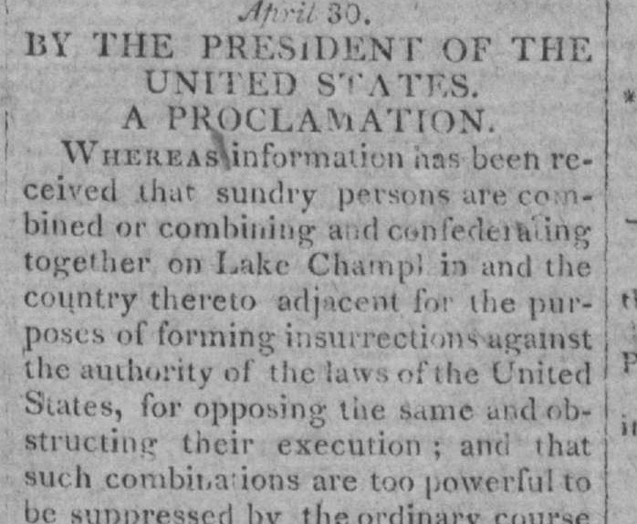
Scan · National Intelligencer, Washington, D.C., 13 May 1808, page 3 · the whole page (PDF)
How the papers set it
Virginia ArgusRichmond, 17 May sets ‘Express from Washington.’ above it
Portland Gazette, and Maine AdvertiserPortland, 16 May prints ‘for the purpose of forming insurrections’, where the others have ‘purposes’
Norfolk GazetteNorfolk, 18 May prints ‘combined and combining’, where the others have ‘or’
Under the heading ‘Melancholy Event’: a revenue cutter's party, sent by the collector after a boat ‘well known to have been some time employed in smuggling’, is fired on from the bank, and two of the crew and a man of the town are killed. A jury of inquest finds ‘wilful murder’; the report asks that ‘all opinion’ be suspended until the facts are known.
BURLINGTON, (Ver.) August 5. Melancholy Event. —We have to record a very melancholy event, which took place in this vicinity on Wednesday last. A Revenue Cutter from the lines commanded by Lieut. Farrington, with a sergeant and twelve privates, was dispatched by the Collector of the Customs in pursuit of a large batteau, called the Black Snake, owned by personsThe opening as printed in the Alexandria Daily Gazette, 18 August. The transcription matches the scan.
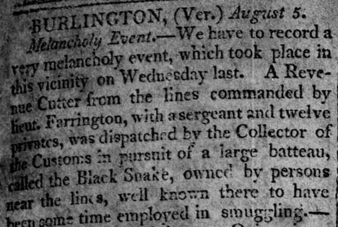
Scan · Alexandria Daily Gazette, Alexandria, Va., 18 August 1808, page 3 · the whole page (PDF)
How the papers set it
National IntelligencerWashington, 19 August dates it ‘Aug. 15.’, where the others have August 5
New Hampshire GazettePortsmouth, 16 August has no ‘Melancholy Event’ heading and begins ‘We have to record’
EnquirerRichmond, 26 August prints it under the state heading ‘VERMONT.’, with the misprint ‘Wenesday’
In August and September the papers printed two of the President's answers: to the legislature of New Hampshire, whose address ‘of the 14th of June’ had approved his measures, and to the town meeting of Boston, which had asked him to suspend the embargo. While the belligerents' edicts stood, he told Boston, he could not suspend it; only the legislature could prescribe its course. The Portland Gazette printed the same words as his answer to Portland.
AnswerDated 2 AugustPresident Jefferson, to the legislature of New Hampshire
To the legislature's address ‘of the 14th of June’, which had approved the measures of his administration: ‘I read with great satisfaction and thankfulness the approbation you have bestowed on them’.
To the Legislature of New Hampshire. IN the review, Fellow-Citizens, which, in your address of the 14th of June, you have taken of the measures pursued since I have been charged with their direction, I read with great satisfaction, and thankfulness the approbation you have bestowed on them; and I feel it an ample reward for any services I may have been able to render.The opening as printed in the New Hampshire Gazette, 16 August. The transcription matches the scan.
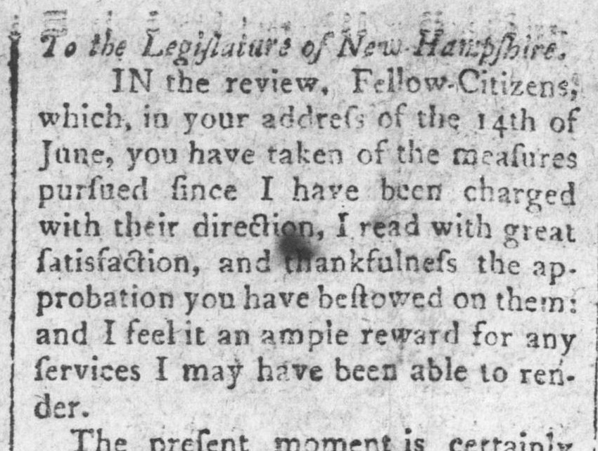
Scan · New Hampshire Gazette, Portsmouth, N.H., 16 August 1808, page 3 · the whole page (PDF)
How the papers set it
Virginia ArgusRichmond, 30 August heads it ‘His excellency governor Langdon.’
Alexandria Daily GazetteAlexandria, 31 August sets its own comment above it, ending ‘Read the following letter, and see whether any other meaning can be attached to Mr. Jefferson's declaration’
Berkeley and JeffersonMartinsburg, 9 September heads it ‘To the Legislature of N. Hampshire.’
AnswerDated 26 AugustPresident Jefferson, to the town meeting of Boston
‘No person has seen, with more concern than myself, the inconveniences brought on our country in general, by the circumstances of the times’; but while the belligerents' edicts stand he cannot suspend the embargo, and only the legislature can prescribe its course.
To the inhabitants of the town Boston, in legal town meeting assembled. Your representation and request were received on the 22d instant, and have been considered with the attention due to every expression of the sentiments and feelings of so respectable a body of my fellow-citizens. No person has seen with more concern than myself,The opening as printed in the National Intelligencer, 14 September. The transcription matches the scan.
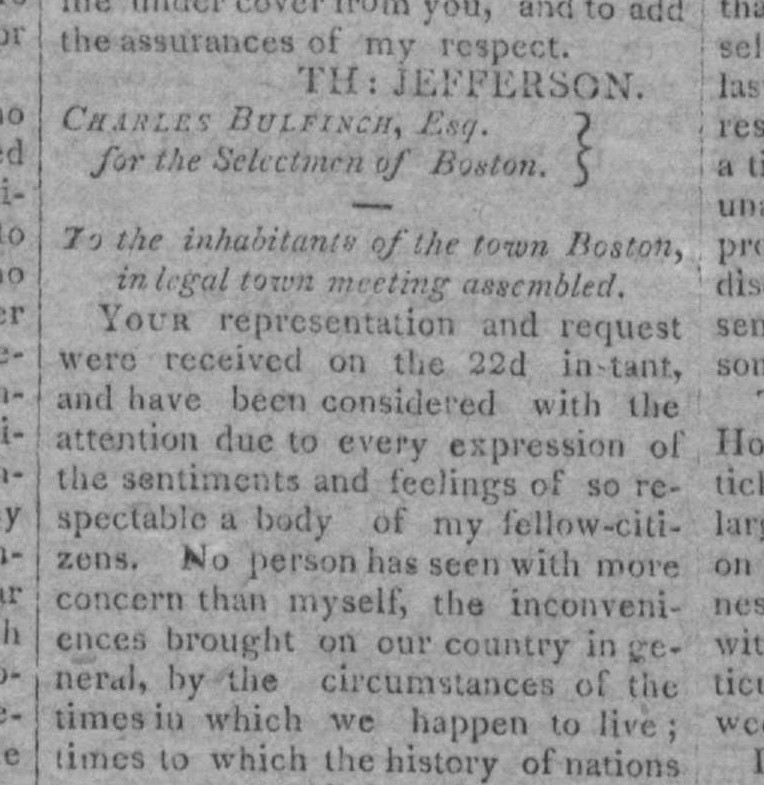
Scan · National Intelligencer, Washington, D.C., 14 September 1808, page 3 · the whole page (PDF)
How the papers set it
Portland Gazette, and Maine AdvertiserPortland, 12 September prints the same answer ‘To the Inhabitants of the Town of Portland, in the District of Maine’
National IntelligencerWashington, 14 September prints ‘To the inhabitants of the town Boston’, without ‘of’
Alexandria Daily GazetteAlexandria, 14 September prints the misprint ‘evety’ for ‘every’
In November a committee of the House reported on ‘so much of the message of the President of the United States, of the 8th instant, as respects our relations with foreign powers’. Mr. Campbell presented it on 22 November, and the National Intelligencer printed it on 23 November. It began: ‘After a period of twenty-five years of peace, hardly interrupted by transient hostilities, and of prosperity unparalleled in the history of nations’; it set out the choice as submission, war with both Britain and France, or the embargo enforced more strictly. By 9 December it was in seven papers.
Report to the HouseReported 22 NovemberMr. G. W. Campbell, for a committee of the House
The report opens ‘After a period of twenty-five years of peace, hardly interrupted by transient hostilities’, and sets out the choice: submission, war with both Britain and France, or the embargo enforced more strictly. Three resolutions follow.
REPORT. The committee to whom was referred so much of the message of the President of the United States, of the 8th instant, as respects our relations with foreign powers; REPORT IN PART. After a period of twenty-five years of peace, hardly interrupted by transient hostilities, and of prosperity unparalleled in the history of nations;The opening as printed in the National Intelligencer, 23 November. The transcription matches the scan.
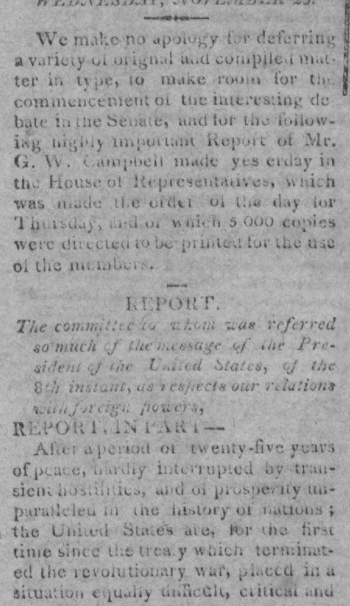
Scan · National Intelligencer, Washington, D.C., 23 November 1808, page 3 · the whole page (PDF)
How the papers set it
National IntelligencerWashington, 23 November introduces ‘the following highly important Report of Mr. G. W. Campbell’, ‘of which 5,000 copies were directed to be printed’
Virginia ArgusRichmond, 29 November prints ‘prosperity unparelleled’
In 1809 the papers printed an act of 9 January to enforce the embargo, and then the act of 1 March to interdict commercial intercourse with Great Britain and France; they open the reviewed stories of 1809. Across the whole archive, stories that mention an embargo rise in five waves: 1794, 1796, 1798, 1801 and 1808–1810.
Made in April, disavowed in July: the Erskine arrangement of 1809
In April 1809 the British minister in Washington, Mr. Erskine, and the Secretary of State exchanged notes, and the President proclaimed that trade with Great Britain could be renewed on 10 June. In July the papers printed London's answer: the agreement was not one the King could approve. In August the President put the trade back under the acts that had suspended it.
10 printed pieces97 printings10 newspapers, Portland to Lexington19 April – 1 December 1809every printing checked against its scan
● a newspaper's printing ◇ the day the piece was written or signed. Rows go down in the order the pieces first appeared, so they step to the right by construction; what to read is the spread within each row (how long a piece stayed in print) and the gap between a diamond and its dots (how long a piece took to reach these papers). Point at a dot for the paper and the day.The pieces as a table
On Wednesday 19 April the National Intelligencer printed, under the heading ‘IMPORTANT.’, that the Secretary of State, Mr. Smith, and the British minister, Mr. Erskine, had been ‘every day engaged in discussions in relation to two points of difference between the United States and Great Britain’, and with it the notes they had exchanged since 17 April. His Majesty, Mr. Erskine wrote, ‘is animated by the most sincere desire for an adjustment of the differences’. By 2 May the paragraph and the notes were in nine papers.
AccountPrinted 19 AprilThe National Intelligencer, Washington
‘Since the arrival of Mr. Oakeley at Washington, Mr. Smith, Secretary of State, and Mr. Erskine, the British Minister, have been, we understand, every day engaged in discussions’ on two points of difference, which Mr. Erskine had been authorised to arrange; the notes that follow ‘shew the happy result of these discussions’.
IMPORTANT. Since the arrival of Mr. Oakeley at Washington, Mr. Smith, Secretary of State, and Mr. Erskine, the British Minister, have been, we understand, every day engaged in discussions in relation to two points of difference between the United States and Great Britain, which, it seems, Mr. Erskine has been authorised to arrange in virtueThe opening as printed in the National Intelligencer, 19 April. The transcription matches the scan.
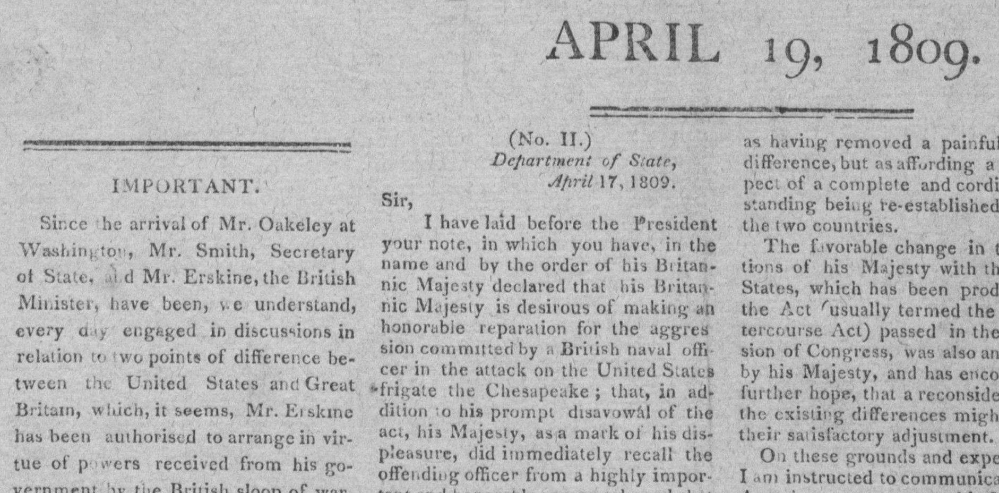
Scan · National Intelligencer, Washington, D.C., 19 April 1809, page 5 · the whole page (PDF)
How the papers set it
Alexandria Daily GazetteAlexandria, 21 April sets a pointing hand before ‘IMPORTANT.’
Norfolk GazetteNorfolk, 24 April spells the name ‘Oakely’ and prints ‘to the two points’
New Hampshire GazettePortsmouth, 2 May credits it to the National Intelligencer of 19 April
Diplomatic notesDated 17 AprilMr. Erskine, the British minister, and Mr. Smith, the Secretary of State
Six notes, numbered I to VI. In the first, Mr. Erskine writes that his Majesty ‘is animated by the most sincere desire for an adjustment of the differences’ between the two countries.
NO. I. MR. ERSKINE TO MR. SMITH. Washington. 17th April, 1809. SIR—I have the honour to inform you, that I have received his majesty's commands, to represent to the government of the United States, that his majesty is animated by the most sincere desire for an adjustment of the differences, which have unhappily so longThe opening as printed in the Norfolk Gazette, 24 April. The transcription matches the scan.
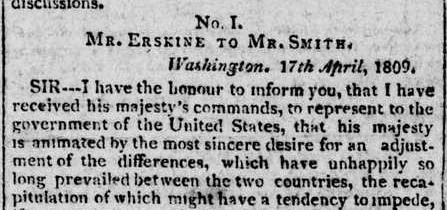
Scan · Norfolk Gazette, Norfolk, Va., 24 April 1809, page 3 · the whole page (PDF)
How the papers set it
Portland Gazette, and Maine AdvertiserPortland, 1 May dates the first note ‘Washington, 7th April, 1809.’; the others have the 17th
Alexandria Daily GazetteAlexandria, 21 April prints ‘unhapily’, a printer's slip
Virginia ArgusRichmond, 18 August prints the first note again on 18 August
The same day the President proclaimed, under the act ‘to interdict the commercial intercourse between the United States and Great Britain and France’, that the British orders in council ‘will have been withdrawn’ on 10 June, after which trade with Great Britain might be renewed. By 2 May the proclamation was in nine papers.
ProclamationDated 19 AprilPresident Madison
Under the act ‘to interdict the commercial intercourse between the United States and Great Britain and France’, the British orders in council ‘will have been withdrawn’ on 10 June 1809, after which trade with Great Britain may be renewed.
BY THE PRESIDENT OF THE UNITED STATES OF AMERICA. A PROCLAMATION. WHEREAS it is provided by the 11th section of the act of Congress entitled "An act to interdict the commercial intercourse between the United States and Great Britain and France, and their dependencies; and for other purposes"—that "in case either France or Great BritainThe opening as printed in the National Intelligencer, 19 April. The transcription matches the scan.
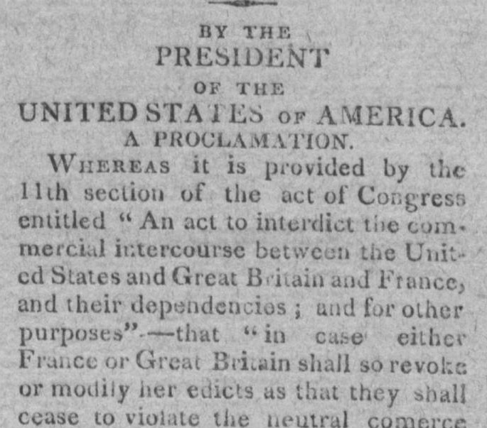
Scan · National Intelligencer, Washington, D.C., 19 April 1809, page 5 · the whole page (PDF)
How the papers set it
Portland Gazette, and Maine AdvertiserPortland, 1 May misprints the heading ‘A PROCLMATION.’
EnquirerRichmond, 25 April heads it ‘THE U. STATES OF AMERICA’ and prints ‘France or G. Britain’
On 22 April the president of the Philadelphia Chamber of Commerce, Thomas Fitzsimons, wrote that the proclamation ‘has necessarily engaged the attention of the merchants of this city’, and asked the Secretary of State for ‘an explanation on a point in it considered as very important’: did 10 June mean the day vessels sailed, or the day they arrived? The Department of State answered on 26 April that it meant their arrival, and left the time of sailing to the owners. From 28 April the papers printed the two letters together; by 16 May they were in nine papers.
Letter and answerDated 22 AprilThomas Fitzsimons, for the Philadelphia Chamber of Commerce, and the Department of State
The proclamation ‘has necessarily engaged the attention of the merchants of this city’; their chamber asks the Secretary of State for ‘an explanation on a point in it considered as very important’, and the Department of State answers on 26 April.
Alexandria, April 28, 1809. Thomas Fitzsimons, president of the Chamber of Commerce at Philadelphia, to the secretary of state. Philadelphia, April 22d, 1809. SIR, The proclamation of the president of the United States, published here yesterday, has necessarily engaged the attention of the merchants of this city, and I am particularly requested by a respectableThe opening as printed in the Alexandria Daily Gazette, 28 April. The transcription matches the scan.
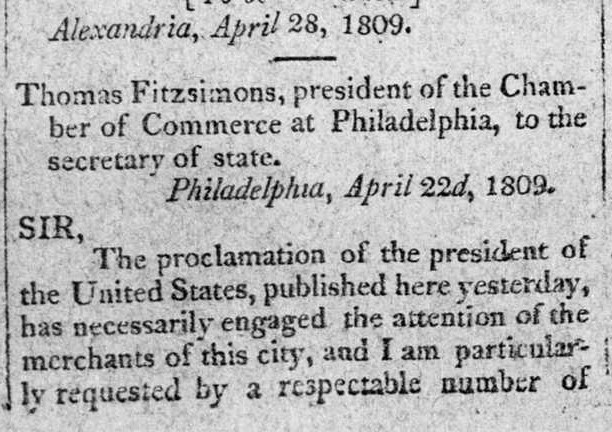
Scan · Alexandria Daily Gazette, Alexandria, Va., 28 April 1809, page 3 · the whole page (PDF)
How the papers set it
Portland Gazette, and Maine AdvertiserPortland, 8 May prints the answer alone, under its own introduction: ‘The President of the Chamber of Commerce, in Philadelphia, (Thomas Fitzsimons, Esq.) having addressed a letter to the Secretary of State’
New Hampshire GazettePortsmouth, 9 May dates the letter ‘PHILADELPHIA, April 23d, 1809.’
Virginia ArgusRichmond, 2 May prints ‘requested by respectable number’, without ‘a’
In July the papers printed the news from London. A report of 24 May, under the heading ‘AMERICAN AFFAIRS’, told how Mr. Canning had answered a question in the House of Commons: the agreement ‘was not made in conformity with the wishes of his majesty nor such as his majesty could approve of’. The order in council of the same day called it ‘a certain provisional agreement’, ‘not such as was authorised by his majesty's instructions’; American vessels that had sailed on the faith of it were not to be ‘molested or interrupted’.
Report of a debateDated 24 MayA London newspaper
In the House of Commons Mr. Canning answers a question: the agreement ‘was not made in conformity with the wishes of his majesty nor such as his majesty could approve of’, and American merchants who acted on it will be protected.
AMERICAN AFFAIRS. LONDON, MAY 24. In the House of Commons last night Lord Henry Petty, put a question to Mr. Canning upon the subject of the correspondence between Mr. Erskine and the American government.—Mr. Canning replied, that the agreement purporting to be entered into by our ministers & the American government, was not made in conformity with the wishes of his Majesty nor such as his Majesty could approve of.The opening as printed in the New Hampshire Gazette, 25 July. The transcription matches the scan.
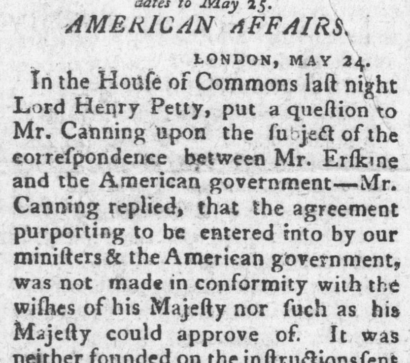
Scan · New Hampshire Gazette, Portsmouth, N.H., 25 July 1809, page 2 · the whole page (PDF)
How the papers set it
Virginia ArgusRichmond, 25 July prints ‘upon the subject of government’, leaving out ‘the correspondence between Mr. Erskine and the American’
Norfolk GazetteNorfolk, 26 July prints ‘the agreement purported to be’, where the others have ‘purporting’
Portland Gazette, and Maine AdvertiserPortland, 24 July sets the dateline ‘LONDON, May 24.’ above the heading ‘AMERICAN AFFAIRS.’
Order in councilDated 24 MayThe King in council, at the Queen's Palace
The ‘provisional agreement’ made by the King's minister in America ‘is not such as was authorised by his majesty's instructions, or such as his majesty can approve’; American vessels that sailed for Holland on the faith of it are not to be ‘molested or interrupted’.
At the Court of Queen's Palace, the 24th of May, 1809, present, the King's most excellent Majesty in Council.—Whereas, advices have been received of a certain provisional agreement entered into by his Majesty's Envoy Extraordinary and Minister Plenipotentiary in America, with the Government of the United States, whereby it is understood that his Majesty's OrdersThe opening as printed in the Portland Gazette, and Maine Advertiser, 24 July. The transcription matches the scan.
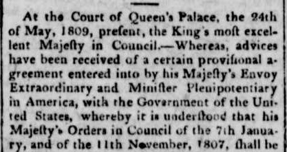
Scan · Portland Gazette, and Maine Advertiser, Portland, Me., 24 July 1809, page 2 · the whole page (PDF)
How the papers set it
National IntelligencerWashington, 24 July prints it under ‘From the London Gazette, May 27.’
Portland Gazette, and Maine AdvertiserPortland, 24 July begins ‘Whereas, advices have been received’, without the order's opening recital
EnquirerRichmond, 28 July prints ‘Orders of Council’
At the end of July the papers printed Mr. Canning's dispatch to Mr. Erskine of 23 January, as it had been laid before Parliament. ‘If there really exist in those individuals who are to have a leading share in the new administration of the U. States, that disposition to come to a complete and cordial understanding with Great Britain’, it began, and it named three conditions on which the orders in council could be withdrawn. On 16 August the National Intelligencer reported that the Secretary of State had received from Mr. Erskine ‘a long and very satisfactory letter’ of explanation.
InstructionsDated 23 JanuaryMr. Secretary Canning, Foreign Office, to Mr. Erskine
‘If there really exist in those individuals who are to have a leading share in the new administration of the U. States, that disposition to come to a complete and cordial understanding with Great Britain’: the dispatch names three conditions on which the orders in council could be withdrawn.
NEW YORK, June 27. Copy of a dispatch from Mr. Secretary Canning, to the Hon. D. M. Erskine; dated Foreign Office, 23d January, 1809. Sir—If there really exists in those individuals, who are to have a leading share in the new administration of the United States, that disposition to come to a complete and cordial understanding with Great Britain, of which you have received from them such positive assurances:The opening as printed in the Virginia Argus, 1 August. The transcription matches the scan.
Scan · Virginia Argus, Richmond, Va., 1 August 1809, page 3 · the whole page (PDF)
How the papers set it
Delaware GazetteWilmington, 2 August dates it ‘23d Jan. 1806’, a printed error for 1809
New Hampshire GazettePortsmouth, 1 August prints ‘you have have received’
National IntelligencerWashington, 31 July prints ‘in the the new’
AccountPrinted 16 AugustThe National Intelligencer, Washington
‘Mr. Secretary Smith received on the 14th inst. from Mr. Erskine a long and very satisfactory letter’, in which Mr. Erskine explains why he did not lay his instructions before the American government; the paper adds its own view of Mr. Canning's dispatch.
Mr. Secretary Smith received on the 14th inst. from Mr. Erskine a long and very satisfactory letter in answer to one of the 9th inst. in which Mr. Smith had respectfully requested a candid explanation, as to the conversations, which Mr. Canning's despatch of the 23d of January had imputed to Mr. Madison, Mr. Gallatin and himself.The opening as printed in the National Intelligencer, 16 August. The transcription matches the scan.
Scan · National Intelligencer, Washington, D.C., 16 August 1809, page 2 · the whole page (PDF)
How the papers set it
EnquirerRichmond, 22 August puts it under ‘WASHINGTON, August 15.’
Alexandria Daily GazetteAlexandria, 17 August prints no dateline, only a rule above the paragraph
On 9 August the President proclaimed that ‘the said orders in council have not been withdrawn agreeably to the communication and declaration aforesaid’, so that trade with Great Britain was again under ‘the several acts by which such trade was suspended’; the Treasury sent the proclamation to the collectors the same day. In August it was in nine papers. The Portland Gazette set it under the headline ‘Non-Intercourse Law Revived!’, and the National Intelligencer printed it again on 1 December.
ProclamationDated 9 AugustPresident Madison
‘It is now officially made known to me that the said orders in council have not been withdrawn agreeably to the communication and declaration aforesaid’: trade with Great Britain ‘is to be considered as under the operation of the several acts by which such trade was suspended’.
By the President of the U. States of America, A PROCLAMATION. WHEREAS in consequence of a communication from his Britannic majesty's envoy extraordinary and minister plenipotentiary, declaring that the British orders in council of January and November, 1807, would have been withdrawn on the 10th day of June last; and by virtue of authority givenThe opening as printed in the Alexandria Daily Gazette, 11 August. The transcription matches the scan.
Scan · Alexandria Daily Gazette, Alexandria, Va., 11 August 1809, page 3 · the whole page (PDF)
How the papers set it
Portland Gazette, and Maine AdvertiserPortland, 21 August sets its own headline above it: ‘Non-Intercourse Law Revived!’
New Hampshire GazettePortsmouth, 22 August leaves out ‘and Minister Plenipotentiary’, under a headline that appears to read ‘HIGHLY IMPORTANT.’
National IntelligencerWashington, 1 December prints it again on 1 December, with ‘the tenth day’ and ‘the eleventh section’
CircularDated 9 AugustThe Treasury, to the collectors of the customs
‘You will herewith receive the copy of a Proclamation of the President’: the act of 28 June now applies to Great Britain as to France, ‘any thing in my circular of 29th June last, to the contrary, notwithstanding’, with rules for vessels that sailed on the faith of the April proclamation.
(Circular.) TREASURY DEPARTMENT, August 9th, 1809. Sir, You will herewith receive the copy of a Proclamation of the President of the United States, announcing that certain British orders in Council were not withdrawn on the 10th day of June last, and consequently that the trade renewable, on the event of the said orders being withdrawn,The opening as printed in the National Intelligencer, 11 August. The transcription matches the scan.
Scan · National Intelligencer, Washington, D.C., 11 August 1809, page 2 · the whole page (PDF)
How the papers set it
Virginia ArgusRichmond, 15 August prints an editor's note above it, ending ‘in consequence of the above Proclamation:]’
New Hampshire GazettePortsmouth, 22 August dates it ‘Aug. 9.’, with no year
In November the papers printed the end of the correspondence with the next British minister, Mr. Jackson: the Secretary of State had informed him ‘that no further communications would be received from him’. The President's message of 29 November began: ‘At the period of our last meeting, I had the satisfaction of communicating an adjustment with one of the principal belligerent nations’.
More storylines will follow as they are read. Each piece can be followed from paper to paper in Pulses; what the archive shows as a whole is on Findings; how a storyline is checked is in How it works.